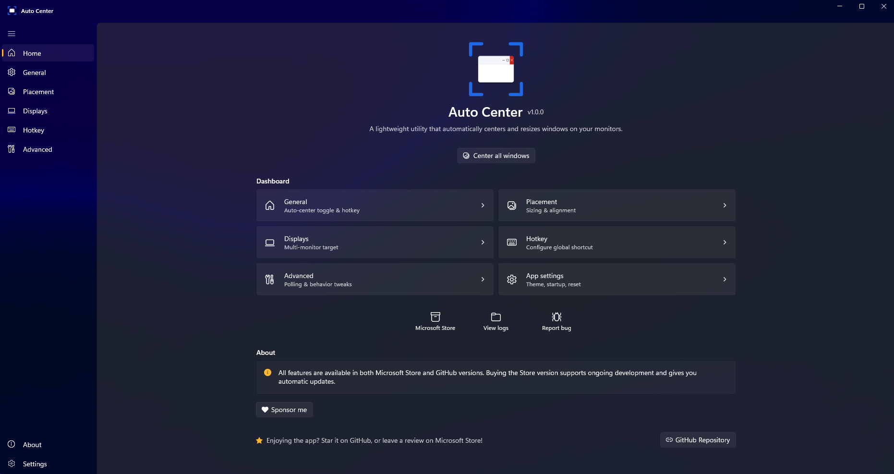
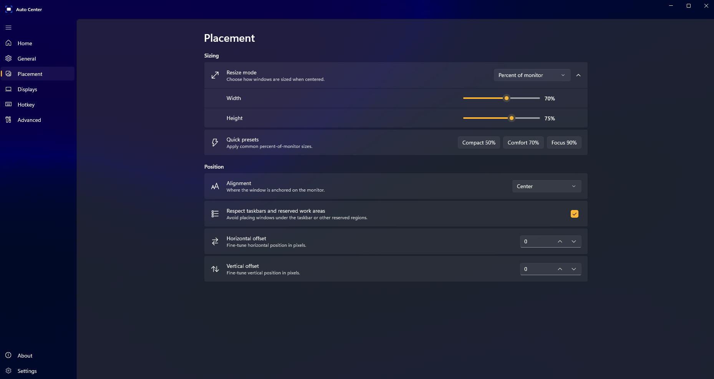
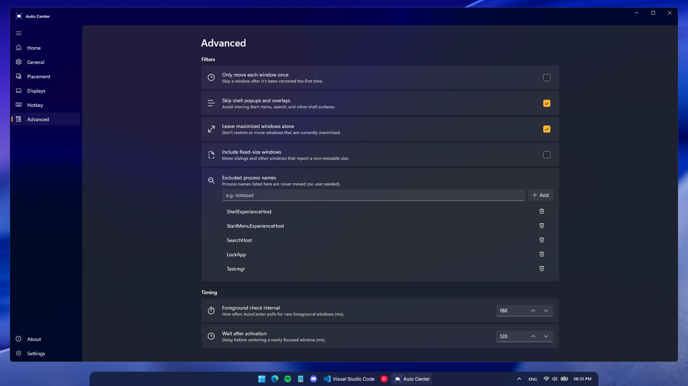
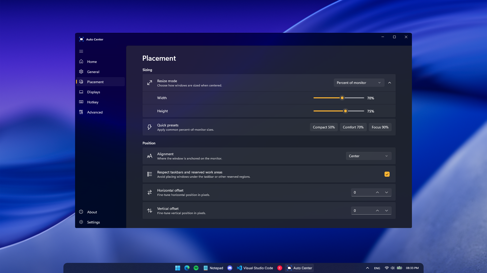

Effortlessly center
windows on Windows.
A lightweight utility that automatically centers and resizes windows across your monitors. Built with WinUI 3 and a single global hotkey away.
What it does
Stays out of your way until you summon it.
Auto-center new windows
Newly focused windows snap to the center of your monitor automatically — no setup required.
Global hotkey
One keystroke (or a Shift double-tap) recenters whatever window has focus, even fixed-size ones.
Flexible sizing
Preserve original size, scale by percent, set fixed pixels, or apply a uniform margin from screen edges.
9 alignment positions
Center, top-left, bottom-right, and everything between. Pick the spot that fits your workflow.
Multi-monitor
Target the active monitor, primary monitor, or pin a specific display. Respects taskbars and work areas.
Lives in the tray
Native Fluent design with light/dark theme support. Minimizes to tray; launches at sign-in if you'd like.
See it in action
Native Fluent Design, top to bottom.




Two ways to install
Same app, same features. Pick the channel that fits.
Microsoft Store
One-click install with automatic background updates. A small one-time purchase that supports ongoing development.
Get on Microsoft StoreGitHub release
Fully featured, completely free, sideloaded as a signed .msixbundle. Updates are manual.
Frequently asked questions
The short answers to the most common questions.
Does it work on Windows 10?
Yes. Auto Center supports Windows 10 (build 17763+) and Windows 11. It uses WinUI 3 and the Windows App SDK runtime, which is bundled with the installer.
Is the GitHub version the same as the Microsoft Store version?
Same code, same features, same signing certificate. The Microsoft Store build adds one-click install and automatic background updates; the GitHub release is a signed .msixbundle you sideload and update manually.
Does it conflict with FancyZones or other window managers?
No — Auto Center only acts on the focused window when triggered (or when a new window appears, if auto-center is enabled). It doesn't intercept drags or hijack zones, so it coexists with FancyZones, PowerToys, and Snap Layouts.
Can it center fixed-size dialog windows?
Yes. The global hotkey recenters whatever window has focus — including fixed-size dialogs and small utility windows that ignore Snap.
What permissions does it need?
Just standard user-level permissions. No admin rights, no network access, no telemetry. Optional "launch at sign-in" registers a startup task; you can revoke it any time from Task Manager → Startup apps.
Why is there a paid version on the Microsoft Store?
The Microsoft Store version is a small one-time $0.99 purchase that supports ongoing development and pays for one-click installs and automatic updates. The full app is — and always will be — free and open source on GitHub.
Privacy by default
Auto Center makes no network calls and collects no telemetry. Your settings and crash logs stay on your machine. Read the privacy policy